王嘉皓
三维动画，和画画。
浙江传媒学院动画（漫插画）专业，2028 届。
在《百年老街·王三街》第一集做镜头 Layout 和部分骨骼绑定，在 UE5 里渲染每个镜头的首尾帧，中间的帧交给 AI 生成，再接成片。平时画画、做绘本、设计形象。
浙江传媒学院 · 杭州
作品集问题请联系 1977132561@qq.com

《百年老街·王三街》第一集，成片里的一帧。
浙江传媒学院动画（漫插画）专业，2028 届。
在《百年老街·王三街》第一集做镜头 Layout 和部分骨骼绑定，在 UE5 里渲染每个镜头的首尾帧，中间的帧交给 AI 生成，再接成片。平时画画、做绘本、设计形象。
《百年老街·王三街》第一集，成片里的一帧。
镜头 Layout：按分镜定机位、构图、调度。
Maya：基础骨骼绑定，能拉动画。
UE5：搭场景，渲染镜头首尾帧。
文生图、图生图、LoRA 训练。
用首尾帧驱动 AI 生成中间帧，一段段接起来。
插画、漫画、绘本、角色和 IP 形象。
常用 Photoshop、CLIP STUDIO PAINT、SAI、Krita。
还碰过 Blender、SketchUp、Substance 3D、Arnold、DAZ Studio、Premiere、After Effects。只是碰过，不算会。
浙江传媒学院动画与数字艺术学院的「新疆题材动漫创作计划」。老师执导，校友公司以校企合作的方式承接。全片原计划三集，我参与第一集。
片子入围第 26 届北京电影学院动画学院奖，获评 2025 年度自治区社科普及优秀项目。
团队给了分镜、人物和场景模型，我把分镜落成三维画面：机位、构图、调度。
项目模型的部分骨骼绑定。
在 UE5 里渲染每个镜头的首尾帧，中间的帧交给 AI 生成视频片段，再拼起来。
帮忙做的。
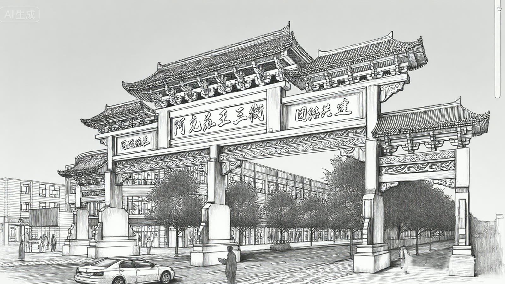
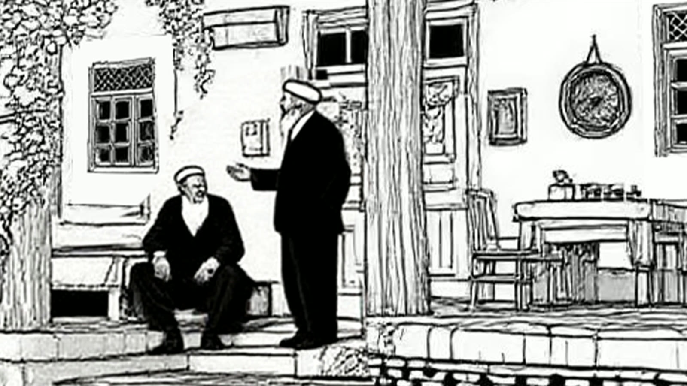
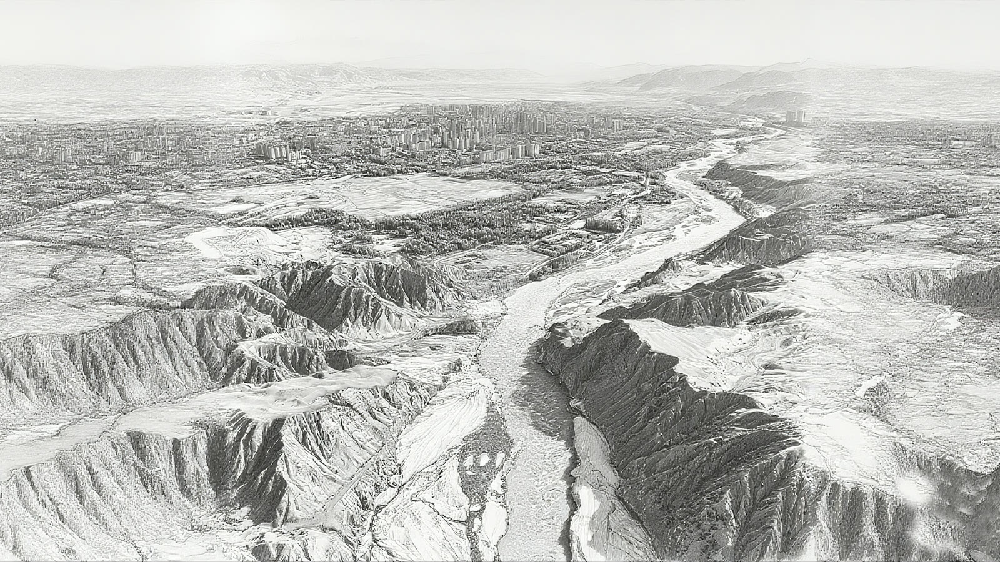
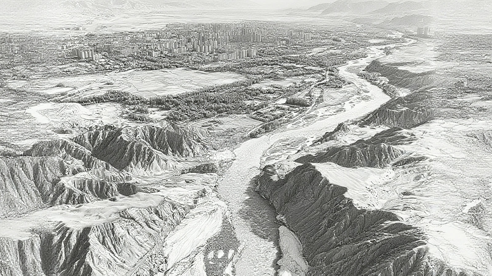
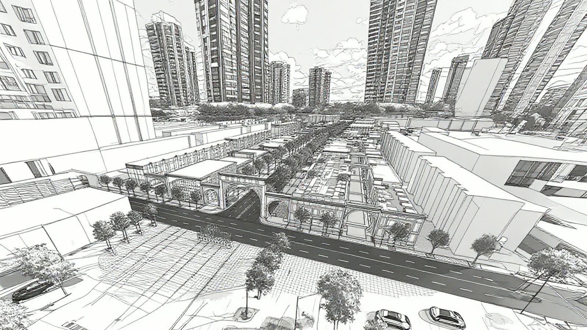
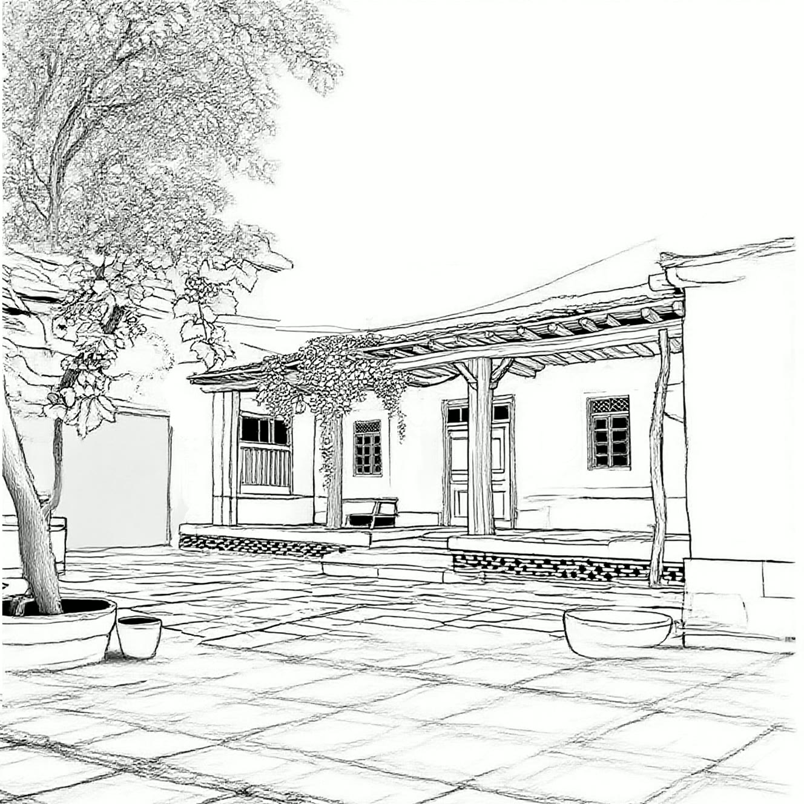
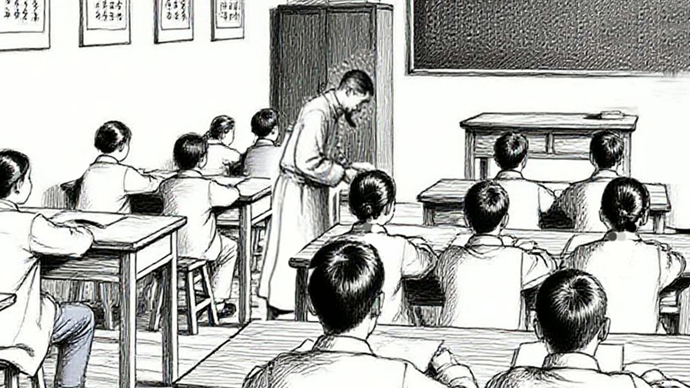
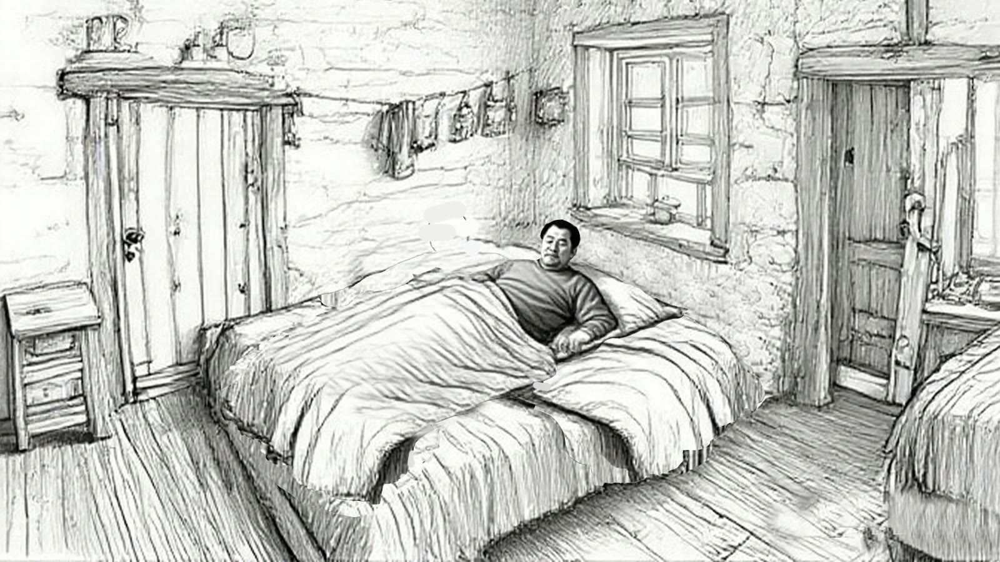
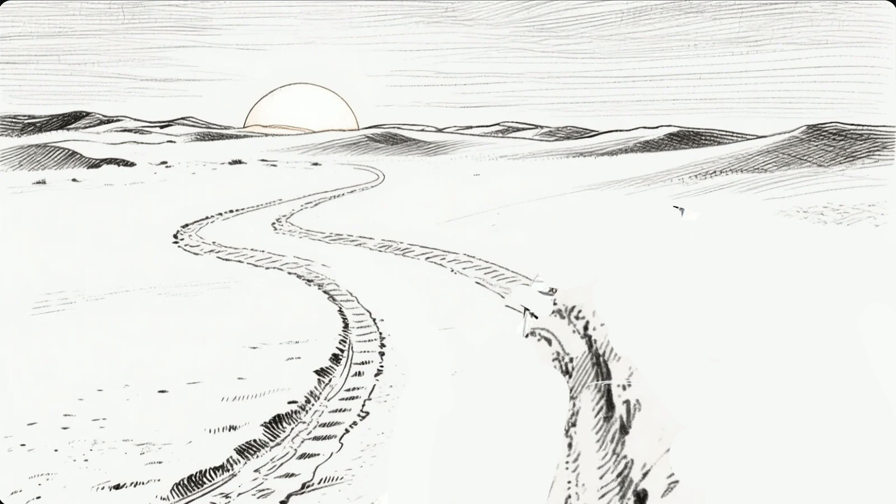
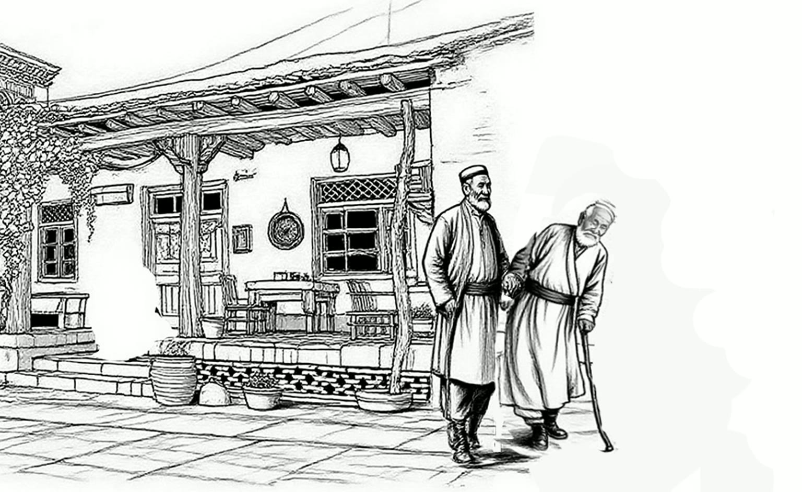

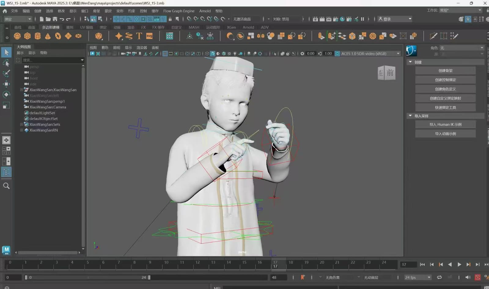

说清楚一件事：人物模型、场景模型、剧本、分镜、导演，都不是我做的。
我做的 Layout，是拿着已有的模型和分镜把镜头摆出来，不是画分镜。
改编自清代林嗣环的《口技》，水墨设色，从「遥闻深巷中犬吠」一直画到「两股战战，几欲先走」。入围 2026 北京电影学院漫画节。
课程作业，老师指导，小组一起做。我画了部分人物、部分场景，还有一些内页。


这四张是我画的。书里其余部分由组里其他人完成。
一个人在城市里走：双层巴士的车窗、雨天的街市、海边的雕像、茶餐厅的下午。
封面、扉页、环衬和九个跨页，画面都是我画的。
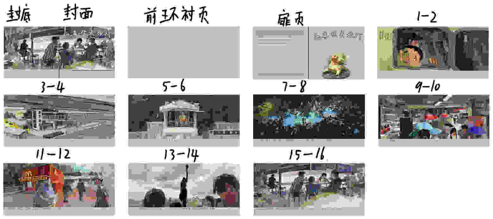


一条绿色小鱼的职场日常：加班、摸鱼、开会、心累。十六个表情，另有封面和海报。
风车杯第十六届创意设计大赛鼓励奖，证书由中国玩具和婴童用品协会发。形象、表情、封面、海报都是我一个人做的。

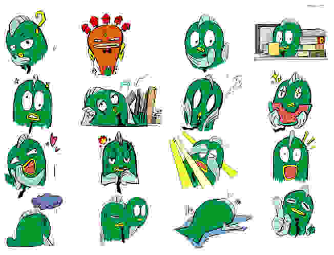


奖项是鼓励奖，证书由中国玩具和婴童用品协会颁发。证书原件没扫，需要的话可以另外给。